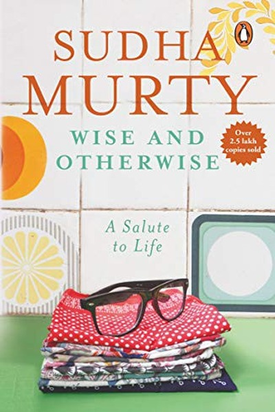

Library › Self-Improvement
Wise & Otherwise: A Lifetime of Experience — Summary & Key Lessons

Fifty short stories from real life — humility, kindness and the quiet wisdom of ordinary people.
📖 OPEN THE FULL INTERACTIVE BREAKDOWN →🌐 Read it in Hindi, Hinglish, Gujarati, Tamil & 22 more languages — free, with audio.
💡 The Big Idea
Sudha Murty's collection of true stories from her years in business, charity and family life shows wisdom in action: the honest clerk, the proud professor, the generous stranger, the greedy relative. Each story is a small mirror — revealing how character shows up in daily choices, and how kindness and integrity quietly compound into a life well lived.
🧠 The 6 Key Lessons
Lesson 1: Humility Opens Doors That Talent Cannot
Chapter 1: The First Story
Murty's stories repeatedly show the same pattern: the person who enters a situation with humility — willing to learn, serve and admit ignorance — wins trust and opportunity, while the brilliant but arrogant person is quietly closed out. Humility is not self-deprecation; it is accurate self-assessment plus genuine respect for others, and it is the fastest way to be taught.
📖 Example: As a young engineer, Murty was the first woman at Tata's to walk the shop floor, and she credits her acceptance to asking questions instead of pretending to know. The workers taught her more in months than textbooks had in years — because she made it easy… Read the full example →
⚡ Do this: In your next unfamiliar situation, lead with three genuine questions instead of one confident statement.
Lesson 2: Small Kindnesses Compound Into a Life
Chapter 2: The Kindness
The book's recurring theme: a meal given to a stranger, a loan with no paperwork, a seat offered to the tired — small acts that cost little and return more than anyone predicts. Murty shows that kindness is not a grand virtue reserved for saints but a habit of attention to other people's needs, and it is the most reliable investment she knows.
📖 Example: A professor in one story quietly paid a poor student's fees for years without telling anyone; decades later that student returned as a successful doctor and funded scholarships for dozens. The original act was small; its compounded effect reshaped lives. Read the full example →
⚡ Do this: Perform one anonymous act of kindness this week — no credit, no mention — and notice how it changes your day.
Lesson 3: Pride Costs More Than It Earns
Chapter 3: The Pride
Several stories illustrate the price of ego: the businessman who refused a small correction and lost a contract, the relative who demanded respect and lost the relationship. Murty's observation: pride is the tax the ego charges on every interaction, and the wise pay it sparingly. Being right is often less valuable than being effective.
📖 Example: A skilled craftsman in one story refused to adjust his design to the customer's need, insisting his way was superior — and lost the order to a less talented rival who listened. The rival's work was average; the listening made it right. Read the full example →
⚡ Do this: Next time you're about to insist on being right, ask: is being right worth more than the relationship or the result here?
Lesson 4: Money Reveals Character — Watch How People Handle It
Chapter 4: The Money
Murty's stories about money are never really about money: they are about honesty, greed, generosity and fear. How a person borrows, lends, spends and gives reveals their values faster than any interview. The wise observe these signals in others — and audit them in themselves.
📖 Example: A borrower in one story repaid a loan years late, with interest, having tracked the lender down after moving cities — while another borrower vanished over a trivial sum. The first became a lifelong partner; the second was never trusted again. The amounts… Read the full example →
⚡ Do this: Notice the next money interaction you observe or make — borrowing, lending, tipping, sharing — and ask what it reveals about values.
Lesson 5: Family Is the First Classroom of Character
Chapter 5: The Family
Murty's most personal stories come from family: grandparents who modeled generosity, parents who chose honesty over profit, relatives whose greed taught negative lessons. She argues that character is largely formed in the small daily interactions of home — and that the lessons we absorbed there run our adult lives, consciously or not.
📖 Example: Murty describes her grandfather's household where every visitor, however poor, was fed before any family member — a lesson in hospitality that shaped her lifelong philanthropy. The lesson was never preached; it was simply lived, daily, in front of children. Read the full example →
⚡ Do this: Identify one value your family lived (or failed to live) that shapes you today — and decide consciously whether it still serves you.
Lesson 6: Service to Others Is the Surest Cure for Self
Chapter 6: The Service
The book's final message: the people who seem most at peace are almost always the ones serving others — teaching, giving, building for those who cannot repay. Murty's own shift from engineering to philanthropy was not a sacrifice but a discovery: attention outward dissolves the anxieties of attention inward.
📖 Example: After decades in business, Murty found her deepest satisfaction in the foundation work — schools, toilets, healthcare for the poorest. The recipients' gratitude was not the point; the point was that serving gave her life a center that wealth and achievement… Read the full example →
⚡ Do this: Volunteer two hours this month for a cause that doesn't benefit you directly — and observe what it does to your own state of mind.
✅ 5-Step Action Plan
- Lead with questions, not statements, in unfamiliar situations
- Do one anonymous act of kindness this week
- Ask 'is being right worth the relationship?' before insisting
- Observe the next money interaction as a character signal
- Volunteer two hours this month for a cause that doesn't benefit you
⚠️ When This Doesn't Work
⚠️ When this doesn't work: The stories celebrate kindness in a specific social context where family and community obligations are strong — in settings with power imbalances, unlimited kindness can become self-exploitation, and 'always give' advice ignores real boundaries. Serve generously, but also protect your own limits and say no when needed.
💀 The Graveyard Proves It
🏰 Nicolas Fouquet — The Party That Bought a Life Sentence. Burn: Freedom — died in prison. Read the full case study →
💬 Best Quotes from Wise & Otherwise: A Lifetime of Experience
- “Humility is the first lesson of leadership.”
- “Money is important, but it is not the most important thing in life.”
- “The best way to find yourself is to lose yourself in the service of others.”
Interactive version: mark lessons as read, listen in your language, share quote cards.